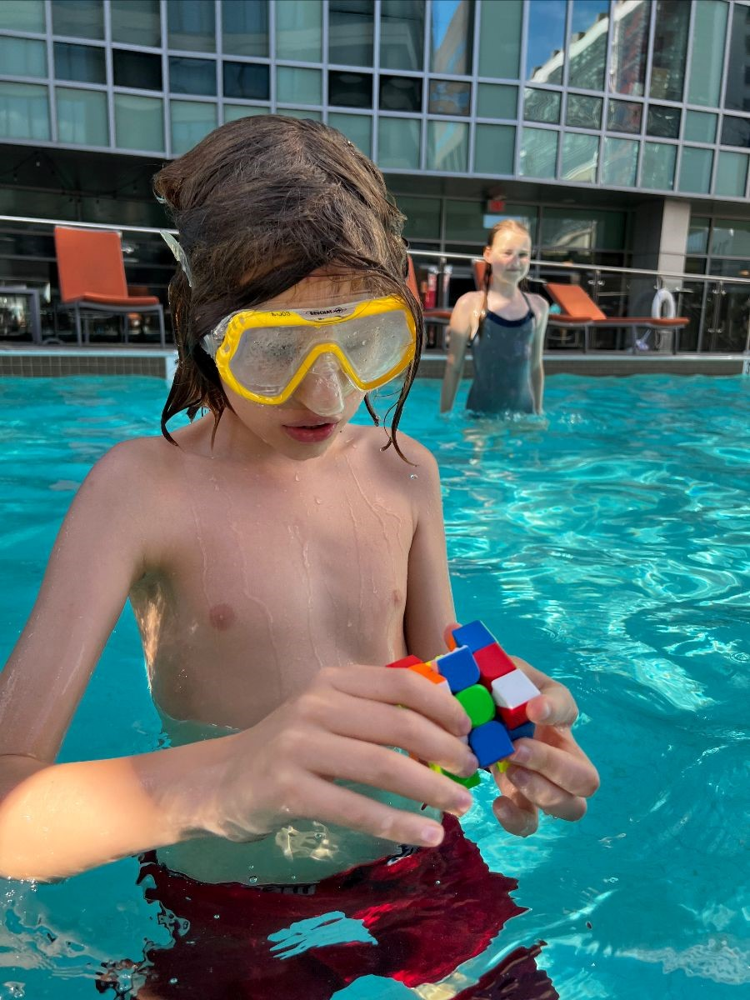

Meet Massachusetts Homeschoolers: Sophia Kornienko
By Sophia Kornienko
I usually say our family are educational refugees. We have had to move countries to be able to homeschool and we are about to move across the Atlantic to be able to continue unschooling. We are seeking refuge from Europe’s bulging institutional control over learning and development as we want our children to continue self-directing their learning process.
My elder son Simon has always been a self-directed learner while I have assumed the role of a facilitator. We have never restricted the time he spent devouring educational apps and YouTube videos and often ran out of paper while he tried to recreate everything he had read or watched. The whole pavement around our apartment block in downtown Amsterdam was covered in Japanese Katakana, Greek letters, the Beaufort scale charts, units of measurement, and most commonly, geometric shapes and formulas.
At the same time, Simon didn’t seem to have much interest in playing with other children and was very asynchronous in his development of practical skills, which alarmed a few state-sponsored experts. For a while, we tried to play the gifted
card to get him spend part of his days in his school’s mixed-age small gifted class. The gifted class teacher didn’t particularly enjoy having him and frequently forgot
to pick him up from his regular overcrowded kindergarten class.
In fact, most teachers didn’t know what to do with Simon, who moved about a lot and didn’t like following instructions. In his second year of school, when he was five, everyone in the gifted class was making Christmas cards, but Simon’s was the only one the teacher didn’t hang up to decorate the wall, because it wasn’t Christmas-themed, she said. Simon’s card depicted the map of Caribbean countries and islands that he drew from memory (his main interest that Christmas).
In the semester that followed, Simon’s principal allowed him to spend most of his time at home, only coming to school for a couple of hours a day. The school could only pay for so many hours a day for Simon to be accompanied by a supervising psychologist and the gifted class teacher wouldn’t let Simon take part in her classes without the psychologist to supervise him. What a huge waste of money it was, if you ask me. And what a great relief to see Simon thrive at home, with all the unstructured time on his hands!
At this point you may wonder, why didn’t we just pull Simon out of school, for he was clearly not school material?
In The Netherlands, parents don’t have the right to pull a child out of school. If they do, they may be taken to court, like criminals. I know many families who have gone through the hell of being accused of parental negligence after the school filed a complaint against them with the much dreaded child protection services.
In their uncompromising war on divergent parenting, the Dutch child protection services remind me of the Spanish inquisition: Many investigative reports, articles and even books have tried to shed light on this dark side of Dutch society, including devastatingly inhumane cases in which children who are in no urgent danger are nonetheless withdrawn from their families by a police squad without prior notice, cases that don’t allow for truth finding, cases where court judges seem to blindly follow child protection services with whom they sometimes work in the same building.
Over forty thousand Dutch children are growing up separated from their parents. This often implies having to change several foster families, developing severe attachment disorders, PTSS, self-mutilation and suicide ideation. Nearly two thousand kids are currently locked up in closed jail-like institutions, the best way the Dutch state has found to protect
them. The Netherlands is a champion in locking up children,
Hélène van Beek writes in her book Children of the State. Children who did nothing wrong.
As I am writing this, I have just signed the petition to abolish these locked facilities and secure units.
It would be wonderful if they became history. However, in my view, the locked facilities are but a symptom of a much deeper problem in the Dutch society: the state simply has too much power over family life and the legal system somehow tolerates that. The lack of trust in divergence at par with a fetish for efficacy, risk aversion and record keeping make it a stressful place to live in if you want to do things differently.
Aged six, Simon became legally obliged to attend school full time, but no small school wanted him. When we asked Simon’s gifted class teacher to take him, her answer was Over my dead body!
Another alternative school Simon tried out for three days said he was too much work. Eventually, we found one more gifted school out of town that agreed to accept Simon on a trial period.
That year was the only time in Simon’s life that I saw him start to wither: he just didn’t have the fuel to light up anymore. After the long bus ride back from school, he crashed on the sofa and just sat there, staring at the TV. The pavement around our block remained free of new writings more often than not.
Of course, there’re plenty of cases when the Dutch school system would simply spit out the unchewable chunk and the child does end up staying at home after all, getting the honorable label of unteachable,
home sitter
and thus exempt of the learning duty
(school attendance). However we were told that our family couldn’t count on that, because Simon wasn’t traumatized enough.
Luckily, by that time, we had done a lot of research and met many other families online who had been in a similar pickle. Simon’s dear dad, my always calm-as-a-rock husband Steven, said he was okay with spending five hours every day commuting to his Dutch office. We decided to move to Belgium.
This was the best decision of my life. (Next to marrying Steven.)
Once we moved to Belgium, it took no longer than three days to officially register Simon and his little sister Neva as homeschoolers. In a way it felt like entering another dimension: you cross the border and instantly you have your basic human right back to choose the way you learn.
The move was very hard on me. After all, I had already emigrated once, from Russia. Amsterdam had become an indispensable part of my identity as the Russian radio correspondent from The Netherlands. It was hard to give up the network I had built up, to give up working all together. Yet, what were all those things worth if they came at the cost of my child withering in front of my eyes?
Belgium used to enjoy total homeschooling freedom until home inspections and compulsory exams were introduced a little less than a decade ago. A stifling wave of increased government control over learning that has sadly engulfed many European countries, whose governments seem to believe that fewer educational choices will lead towards better assimilation of newcomers. That said, the Flemish (Dutch) speaking part of the country continues to leave its homeschoolers in relative peace until around age 12. Submitting your annual educational plan is all you have to do and the home inspections, no matter how unfair and intrusive they may feel, only take place once every two to three years.
We have relished our six years in Belgium. We started out feeling small, tired and shivery, scared to be denied, but the gorgeous city of Antwerp embraced us and let us be. As opposed to the friendly but nosy and judgmental Amsterdam, Antwerp didn’t really care. And that was exactly what we needed in order to heal and rediscover ourselves. We have reemerged on the other end of the Belgian leg of our journey as a family no longer in need of validation of our children’s giftedness, no longer anxious about their quirks and asynchronicities, but humbled by how meaningful our children’s choices have been for their personal fulfillment. Antwerp is where we have learned to let go and to trust.
Today, as Neva and Simon are entering their teens, their main passion is game development. They have already published their first rather big game (in collaboration with a partner from India) and have been learning the Unity engine together while working on two more unfinished platformers. Simon, who taught himself trigonometry, logs and derivatives before the age of nine, continues to explore maths and computer science. Neva also enjoys coding, as well as composing game music. She engages in exhaustive explorations of adventure game mechanics, lore and design and dreams of one day becoming part of an epic game dev team. Simon has discovered he prefers to work solo on projects that are more abstract, for example, involving Turing-complete puzzle games.
They are both really enjoying their connections with like-minded geeks across the globe. They both hate it when I try to sum up what they’re doing in just a few sentences.
Our home has the vibe of a creative studio as my children and I work on our projects alongside each other. Our unschooling lifestyle has empowered me to rekindle my love for drawing and technology: I have completed several animation courses. With my two university degrees, I don’t think I have ever learned as much as have learned in the past years thanks to unschooling.
We want to continue living like this, to enjoy each other’s finds and epiphanies, to joyfully sort out the unknown every day brings. We don’t want to have to prep Neva and Simon for the compulsory exams in Brussels that they would have to take in 13 subjects, following a curriculum that has very little relevance to their daily lives or hopes for the future. During the three-day battery of elementary school exams last summer, Simon was asked a question about letting out pants at the tailor’s! Simon did well on those exams, even in French, but we don’t want to repeat the experience for Neva. Besides, Neva doesn’t want to learn French, so why force her?
Simon also passed one of the middle school exams (in math) with ease when he was nine but failed his oral English. You speak like a native speaker, but we can’t give you a passing grade because you don’t want to answer the questions,
the lady from the exam committee told him as he sat there, crying in my lap. Their questions lacked logic,
he told me later that night, in English. I guess it was one of those false negatives,
he added as he fell asleep.
We don’t want Simon and Neva to be led by external motivations and measure their self-worth by their test results. Most of all, we don’t want them to get distracted on their beautiful journey of self-discovery.
In a few weeks, we will be moving to the US. Even though, similarly to the European school system, the US conventional school system suffers from some grave ailments that will eventually drive it extinct (little autonomy for both students and teachers, the same coercive ritual of graded promotions), you do have the freedom to step in and out of that system as you please. In America, unschooling is not a taboo and a plethora of opportunities exist for those who don’t want to do school but do want to get credentials or academic degrees later in life. I want the kids to taste that air of unparalleled entrepreneurial thinking, scientific rigor and personal responsibility that America still has to offer.
In a vertiginous twist of circumstances, our little flight for freedom is happening in the midst of the largest migration crisis since WWII. There are days when it feels like we’re being swept westwards by a mighty wave. Yet, I know we should be able to stand up and ride the wave. My new Ukrainian refugee friends, who haven’t lost their grip on the surfboard in the worst storm, have been an enormous inspiration to me.
I don’t know what this new chapter will bring. To quote Richard Feynman, I don ’t feel frightened by not knowing things, by being lost in a mysterious universe without any purpose, which is the way it really is, as far as I can tell. Possibly. It doesn't frighten me.
Sophia Kornienko is a Russian-Dutch journalist and animation artist. Together with her husband Steven Houben, an Engineering and Life Sciences recruitment director at a large international company, she has moved countries twice in search of educational freedom for their two geeky autodidactic kids, Simon and Neva. They immigrated to the US in May 2022 and are settling in Brookline, MA, hoping to have found a place on the globe with a Goldilocks ratio of freedom, opportunity, and resources for self-directed learning.
The above text, written a few weeks before her big move across the Atlantic, is the closing chapter Sophia contributed to the second edition of the book 18, An Unschooling Experience by Marta Obiols Llistar that came out in Spanish in May 2022 under the title #vidasincole. The English second edition of the book is expected later this summer. You can listen to Sophia read her chapter as part of the podcast she hosts, The UnschoolingFuture Podcast. Sophia and her kids also regularly share their homeschooling adventures in their blog Geeks Out of the Box.